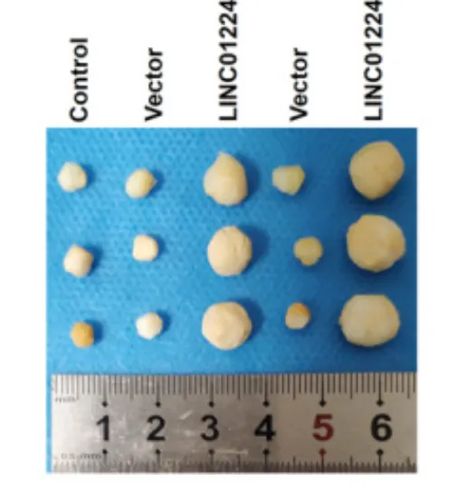
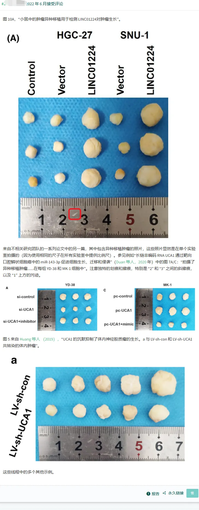
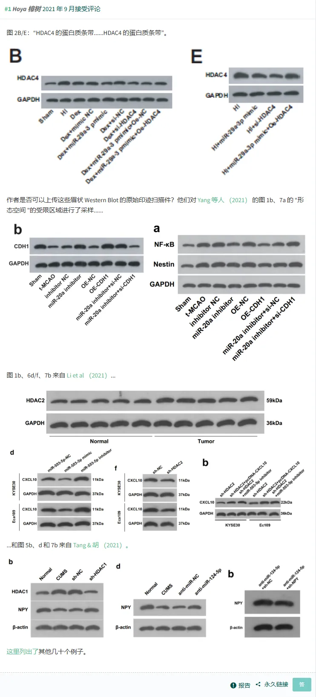
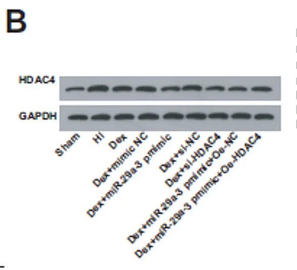
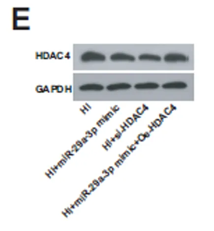

造假无下限，手搓肿瘤？手绘WB条带？
原文：https://mp.weixin.qq.com/s?__biz=MzAwMzIzOTk5OQ==&mid=2247528478&idx=1&sn=d235f4ed3cc75876f06f8f5b271732bd&chksm=9b3c094eac4b80584363e8753664e1cfc06bfb104f669b281e61b0aab75a383797d3e51946eb#rd 合集：实验基地 / 漫谈胡侃
无最近刷到几条造假文章，供大家鉴赏。维护诚信、健康的科研圈，人人有责。我们也在帮大家做真实验的道路上保驾护航：实验技能培养计划开启！
土豆泥事件
- 论文发表与研究内容
2021 年，一篇论文发表在《Cancer Medicine》期刊上，聚焦胃腺癌（STAD），通过生物信息学手段预测出 LINC01224 在胃腺癌中高表达，提出 LINC01224 能吸附 miR-193a-5p 靶向 CDK8，验证了 LINC01224/miR-193a-5p/CDK8 轴对胃癌生物学行为的影响，为胃癌诊断和治疗提供新思路和靶点。
-
问题发现过程
- 图片重复问题初现 2022 年初，网友使用 Figcheck 筛查工具对该论文进行检测时，发现 Figure 4c 疑似存在图片重复使用的情况，引发人们对论文的关注和警觉。
-
“土豆泥肿瘤” 质疑 人们进一步检查论文图片时，发现 Figure 10A 的移植瘤图异常，放大后图中的 “肿瘤” 形态奇特，被质疑像土豆泥、年糕、橡皮泥、酒精棉球、软陶等日常物品。下图为被质疑的实验结果图。

-
关键证据 2022 年 6 月，有网友在 PubPeer 发帖称，Figure 10A 与另外两篇论文中的其他种类肿瘤图像使用了同一把尺子，进一步坐实了该论文存在问题。下图为PubPeer 质疑言论截图。

**
- 撤稿及原因
**2024 年 5 月 30 日，《Cancer Medicine》期刊发布了 “LINC01224 accelerates malignant transformation via MiR-193a-5p/CDK8 axis in gastric cancer” 论文的撤稿公告。作者最初以数据有误为由提出撤稿，但未说明具体错误，也未提供原始数据，未回应期刊对第三方所提其他问题发表评论的邀请，编辑们对研究数据和结论失去信心，最终决定撤稿 。
- 原文公告内容如下：
The above article, published online on 2 March 2021 in Wiley Online Library (wileyonlinelibrary.com), has been retracted with the agreement of the journal's Editor-in-Chief, Stephen Tait, and John Wiley and Sons Ltd. Following publication, concerns were raised by a third party regarding the origin of Figure 10A. The third party identified some scientific irregularities and unexpected similarities between the apparatus (ruler) in this figure and that in figures from other papers published by unrelated author groups. The authors initially contacted the journal to request the retraction of their article due to errors in their data. However, the authors provided no further details, did not respond to our invitation to comment on other issues raised by the third party, and did not provide the original, unmodified data. The editors have lost confidence in the data and conclusions of this study.
- 中文翻译如下：
上述论文于 2021 年 3 月 2 日在线发表在 Wiley 在线图书馆（网址：wileyonlinelibrary.com）上，经杂志主编 Stephen Tait 和约翰・威利父子出版公司（John Wiley and Sons Ltd.）同意后撤回。该论文发布后，第三方对文中图 10A 的来源提出了担忧。第三方发现了一些科学违规行为，以及此图中的仪器（尺子）与无关作者组发表的其他论文的图片中出现的仪器（尺子）之间存在意想不到的相似性。最初作者联系期刊，要求撤回他们的论文，原因是他们的数据存在错误。然而，作者没有提供进一步的细节，也没有回应我们请求的对第三方所提出的其他问题发表评论的邀请，也没有提供原始的、未经修改的数据。编辑们对这项研究的数据和结论失去了信心。
- 参考文献Sun H, Yan J, Tian G, Chen X, Song W. LINC01224 accelerates malignant transformation via MiR-193a-5p/CDK8 axis in gastric cancer. Cancer Med. 2021 Feb;10(4):1377-1393.
眉笔事件
- 论文发表与研究内容
2020 年 11 月，广西某医院的研究人员在《Brain Research Bulletin》期刊上发表了了一篇名为”MicroRNA-29a-3p strengthens the effect of dexmedetomidine on improving neurologic damage in newborn rats with hypoxic-ischemic brain damage by inhibiting HDAC4“的论文。这篇文章表明miR-29a-3p 通过抑制 HDAC4 增强右美托咪定（Dex）对缺氧缺血性脑损伤（HIBD）新生大鼠的神经保护作用。
-
事件过程
-
PubPeer 平台质疑 有读者或科研人员发现该论文图 2B+E 中的蛋白质印迹结果呈现出的 “眉毛” 形态，与其他许多出版物中的相关结果存在不自然的相似性。在正常的科研实验中，由于实验条件、样本等因素的差异，蛋白质印迹结果应该具有多样性，这种高度相似的 “眉毛” 形态不符合正常情况，因此被怀疑数据可能存在问题。下图是PubPeer质疑的截图。


-
期刊调查 《Brain Research Bulletin》杂志收到相关质疑后，要求通讯作者对这些问题发表评论并提供原始数据。下图为被质疑的WB实验结果图。


-
撤稿 由于作者无法提供原始数据来证实实验结果的真实性和可靠性，主编无法确认结果的整体有效性，最终于 2022 年 9 月 12 日决定撤稿。
-
** **
- 原文公告内容如下：
This article has been retracted: please see Elsevier Policy on Article Withdrawal (https://www.elsevier.com/about/our-business/policies/article-withdrawal). This article has been retracted at the request of the Editor-in-Chief. Concern was raised about the reliability of the Western blot results in Figs. 2B+E, which appear to have the same eyebrow shaped phenotype as many other publications tabulated here (https://docs.google.com/spreadsheets/d/149EjFXVxpwkBXYJOnOHb6RhAqT4a2llhj9LM60MBffM/edit#gid=0). The journal requested the corresponding author comment on these concerns and provide the raw data. However, the authors were not responsive to the request for comment. Since original data could not be provided, the overall validity of the results could not be confirmed. Therefore, the Editor-in-Chief decided to retract the article.
- 中文翻译如下：
这篇文章已被撤回：请查看爱思唯尔关于文章撤回的政策（https://www.elsevier.com/about/our - business/policies/article - withdrawal）。本文是应主编要求撤回的。有人对图 2B + E 中蛋白质印迹结果的可靠性提出了质疑，这些结果似乎与此处列表中的许多其他出版物具有相同的 “眉毛” 形状表型（https://docs.google.com/spreadsheets/d/149EjFXVxpwkBXYJOnOHb6RhAqT4a2llhj9LM60MBffM/edit#gid = 0）。该期刊要求通讯作者就这些问题发表评论并提供原始数据。然而，作者未回应发表评论的请求。由于无法提供原始数据，结果的整体有效性无法得到确认。因此，主编决定撤回该文章。
- 参考文献Huang W, Xiao F, Huang W, Wei Q, Li X. RETRACTED: MicroRNA-29a-3p strengthens the effect of dexmedetomidine on improving neurologic damage in newborn rats with hypoxic-ischemic brain damage by inhibiting HDAC4. Brain Res Bull. 2021 Feb;167:71-79.
“土豆泥肿瘤”与“眉笔WB”这两起撤稿事件，暴露了科研诚信危机与舆论场的双重荒诞。前者因移植瘤图像酷似日常物品、跨论文共用同一尺子遭质疑，后者因WB条带呈现非自然的“眉毛”形态被揭穿，最终皆因作者拒绝提供原始数据导致撤稿。事件折射出“快餐式科研”的恶果：部分研究者为快速发文铤而走险，期刊监督滞后，而PubPeer等平台成为纠错的主力，体现科研共同体的“自净”能力。
唯有让“数据真实性”重归学术信仰的核心，让监督机制从“抓鬼”转向“预防”，才能避免“土豆泥”与“眉笔”成为科学精神的墓志铭。

如何联系我们

 留一个领取资料、免费两周学习版服务器的微信号[Biomamba_zhushou]，方便各位随时交流。同时我们也构建了交流群矩阵，欢迎大家入群讨论。
留一个领取资料、免费两周学习版服务器的微信号[Biomamba_zhushou]，方便各位随时交流。同时我们也构建了交流群矩阵，欢迎大家入群讨论。
大家可以阅读完这几篇之后添加给生信入门初学者的小贴士 如何搜索公众号过往发布内容
已有生信基地联系方式的同学无需重复添加

 您点的每个赞和在看，我都认真当成了喜欢
您点的每个赞和在看，我都认真当成了喜欢